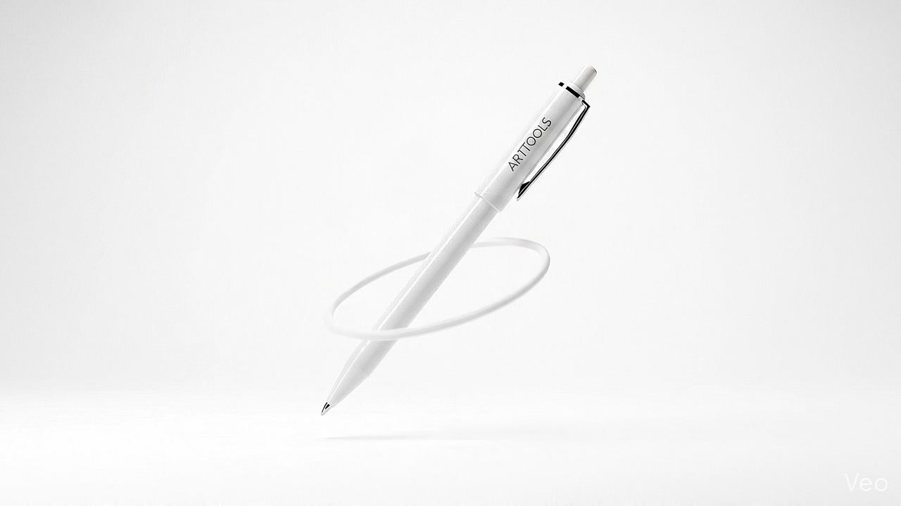
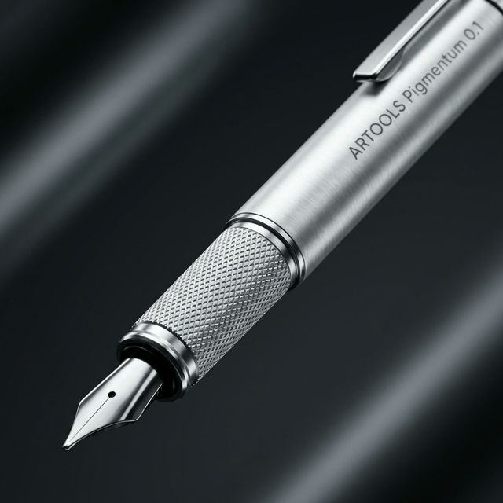

Fluxo Contínuo
A tinta flui sem interrupções, permitindo que seus pensamentos corram livremente para o papel sem fricção.

A Artools Precision Pen redefine o equilíbrio entre peso, fluxo e design. Feita para criadores que exigem perfeição em cada traço.
Nossa arquitetura de fluxo proprietária sincroniza a deposição de tinta em tempo real. Construída sobre um chassi de alumínio aeroespacial usinado em CNC de 5 eixos.

Estrutura monobloco usinada em Alumínio 6061-T6. Leveza extrema (14g) com resistência estrutural de nível militar.
Sistema de tinta de baixa viscosidade com regulação por capilaridade assistida. O traço nunca falha até 15°.
Micro-usinagem a laser cria uma superfície de aderência perfeita (Ra 0.8µm) sem acumular resíduos.
Conteúdo fictício. Este é um projeto de estudo: o produto não existe. "Engenharia Suíça", "Precisão Molecular", o alumínio 6061-T6, os 14g, os 0.3mm, o "traço que nunca falha até 15°" e o Ra 0.8µm são textos de exemplo, sem comprovação nem medição real.
A tinta flui sem interrupções, permitindo que seus pensamentos corram livremente para o papel sem fricção.
Mecanismo de clique silencioso e ponta amortecida. Escreva em qualquer ambiente sem distrações.
Centro de gravidade estudado para repousar na junção da mão, reduzindo a fadiga em 40%.
Conteúdo fictício. A "redução de fadiga em 40%" e os demais benefícios descritos nos cards são exemplos de texto publicitário, sem estudo ou teste por trás.
Signature Series • 2026